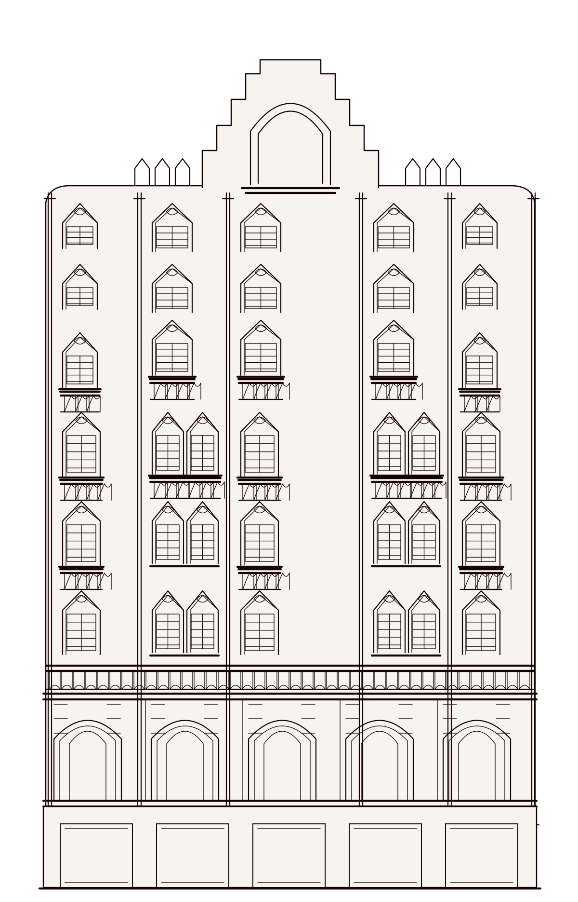
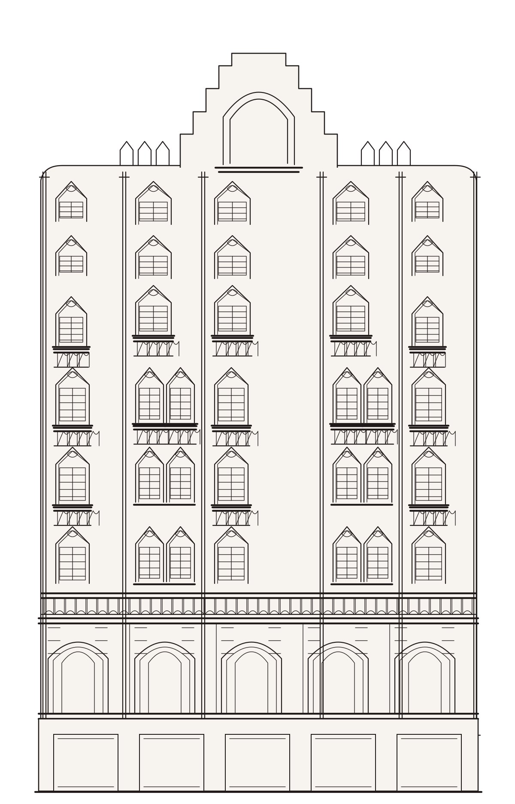
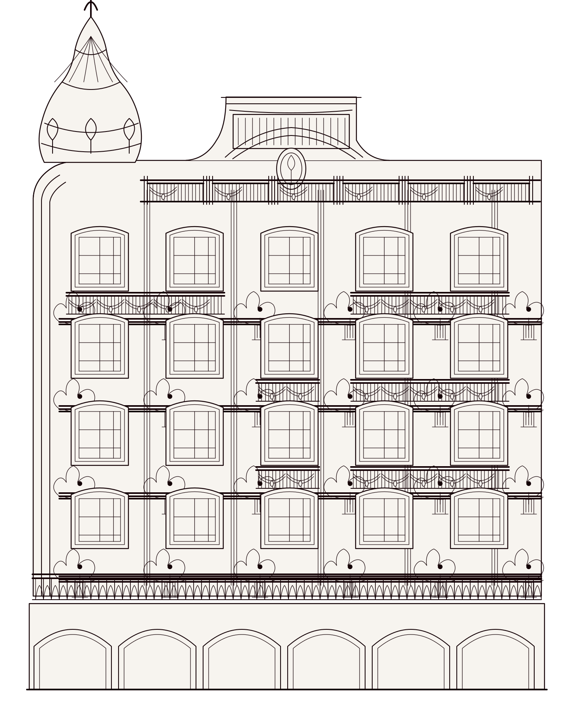
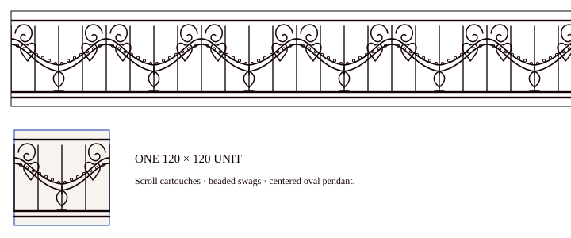
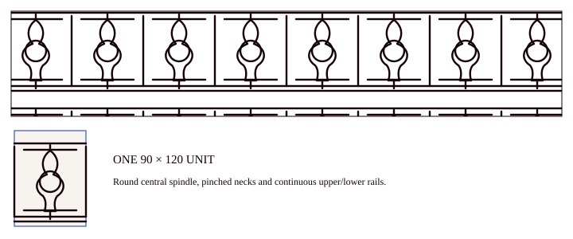
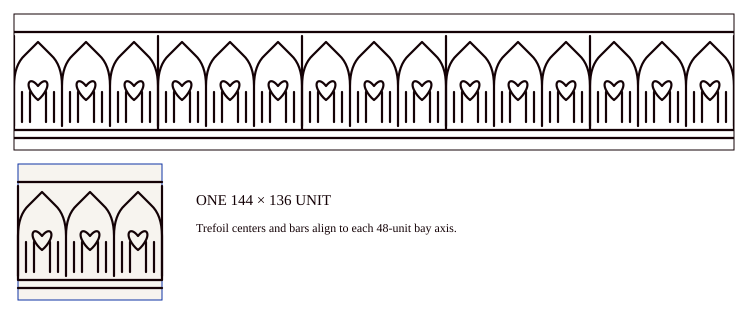

Two facades, drawn from the page.
Source photographs, front-elevation vectors and ornament studies are paired below for visual comparison. IDs, provenance and cell metadata are in manifest.json.
Visible faces only. This is an interpretive vector reconstruction, not a measured survey or claim about unphotographed sides. The source images remain unchanged at their original paths.
Wide Low Facade
Four tall window tiers, upper paired railings, continuous lower terrace and open arcade. Dimensions are not measured.


- wide low facade
- rounded left corner with cupola turret
- stepped central pediment and round crest
- six approximate window bays
- separate source-specific alternative shows paired rail spans above a continuous low terrace
- fluted pilasters, dense cornice and pendant brackets
- round-arched ground-floor arcade
Five-bay stepped facade
Six distinct window tiers lead to a continuous baluster terrace, round-arch stone register and blank rectangular shop openings. Interpretive elevation, not measured.


- five vertical bays with single/pair/single/pair/single rhythm
- stepped central crown with nested pointed blind arch
- six window tiers with distinctive middle and lower bay groupings
- narrow centered crown and pointed openings
- continuous baluster terrace over an open stone arcade
- blank rectangular ground-level shop openings
Bay-centered window groups
The original-layout SVG remains unchanged. This new variant centers each complete single or paired window-and-balcony group within its primary bay and aligns the crown with the middle bay.



Cupola, pediment and grouped terrace rails
This added study uses the full KA-002 elevation and KA-001 detail crop to distinguish the tall ribbed onion dome, large raised pediment, balcony pair groupings, continuous lowest terrace and open arcade. It remains an interpretation rather than a measured tracing.


01 Swag Scroll Iron Rail
Repeat cell: 120 × 120 units


02 Hourglass Baluster
Repeat cell: 90 × 120 units

03 Fluted Dentil Rosette Frieze
Repeat cell: 144 × 90 units

04 Pointed Trefoil Rail
Repeat cell: 144 × 136 units


05 Nested Pointed Window Arch
Bounded frame; no repeat claim